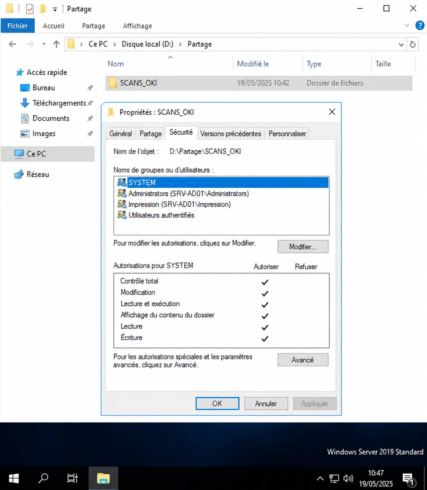
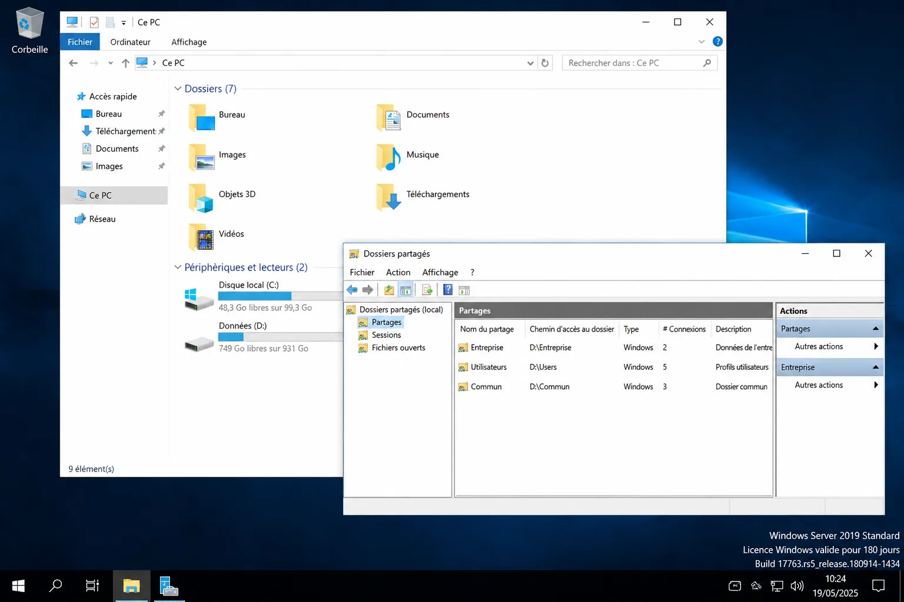

Compte-rendu de Stage Administration Systèmes, Réseaux & Virtualisation
Six semaines chez Adefi Informatique en 2ème année : virtualisation VMware ESXi, déploiement Active Directory, VPN SSL, migration de données et Veeam Backup.
🏢 Adefi Informatique👤 M. Cédric Duval📅 6 semaines📍 SISR
Adefi Informatique est une société de services informatiques intervenant auprès d'entreprises et de collectivités. En 2ème année, les missions sont à plus forte valeur technique : virtualisation, Active Directory, solutions de sauvegarde et sécurité réseau.
Informations
Détail
Entreprise
Adefi Informatique
Tuteur
M. Cédric Duval
Durée
6 semaines
Technologies
VMware ESXi, Veeam, Zyxel, Linux
Objectifs
Missions de 2ème année
1
Virtualisation
Installer et configurer VMware ESXi sur un serveur HPE physique.
2
Active Directory
Déployer un nouveau DC Windows Server avec DNS, DHCP et GPO.
3
Sécurité / Accès distant
VPN SSL Zyxel, TSE et connexions Bureau à distance.
4
Sauvegarde & migration
Migrer ~182 Go de données, transférer les rôles FSMO et mettre en place Veeam Backup.
Faits marquants
Quatre interventions qui résument ce stage
Le détail semaine par semaine se trouve plus bas. Voici d'abord les interventions à plus fort
impact, présentées par le problème rencontré, ce que j'ai fait et ce que ça a donné.
1
Mise en service d'un hyperviseur sur serveur physique
Situation
Un serveur HPE devait accueillir plusieurs machines virtuelles, avec une tolérance aux pannes disque.
Ce que j'ai fait
Création de deux volumes RAID 1, installation de la clé hyperviseur HPE, puis installation et configuration de VMware ESXi sur le serveur.
Résultat
Hyperviseur opérationnel hébergeant 3 machines virtuelles sur des banques de données en RAID 1.
2
Second contrôleur de domaine et reprise des rôles FSMO
Situation
Le domaine adefi.local ne reposait que sur un seul contrôleur de domaine : une panne de ce serveur, et plus personne ne s'authentifie.
Ce que j'ai fait
Promotion de SRV-AD02 en contrôleur de domaine, installation des rôles DNS et DHCP, contrôle des stratégies de groupe, puis vérification de la réplication avec repadmin /replsummary et transfert des 5 rôles FSMO validé par netdom query fsmo.
Résultat
Deux contrôleurs de domaine en réplication, 0 erreur sur 5 partenaires dans les deux sens, et les 5 rôles FSMO portés par le nouveau serveur.
3
Migration de 182 Go de données et mise en place des sauvegardes
Situation
Les données de production devaient être déplacées vers un nouveau serveur sans interrompre l'activité, et l'infrastructure n'avait pas encore de politique de sauvegarde formalisée.
Ce que j'ai fait
Migration par lots progressifs avec vérification d'intégrité et bascule planifiée hors heures de bureau, puis mise en place de Veeam Backup & Replication : sauvegarde des VM ESXi, sauvegarde par agent du serveur et réplication des VM, avec planifications quotidiennes.
Résultat
Environ 182 Go migrés sans coupure ressentie par les utilisateurs, partages réseau opérationnels et sauvegardes automatiques en place.
4
Diagnostic d'un scan réseau en échec : remonter à la cause réelle
Situation
Le copieur OKI renvoyait une « erreur de stockage » à chaque numérisation vers le dossier réseau. Le symptôme désignait l'imprimante, ce qui envoyait le diagnostic dans la mauvaise direction.
Ce que j'ai fait
Vérification du chemin réel emprunté par le fichier plutôt que du périphérique : les droits NTFS du dossier SCANS_OKI ne permettaient pas l'écriture. Ajout du groupe Impression avec les droits Modifier et Écriture.
Résultat
Numérisation vers le réseau rétablie, sans intervention sur le copieur — le matériel n'était pas en cause.
Semaine 1
Infrastructure serveur & virtualisation
Activités principales
Analyse et correction d'un problème de scan réseau OKI (droits NTFS insuffisants sur le dossier SCANS_OKI).
Mise en place de deux volumes RAID 1 sur serveur HPE et installation d'une clé HPE hyperviseur.
Installation et configuration de VMware ESXi sur le serveur physique.
Diagnostic OKI : Erreur "Erreur de stockage" causée par des droits NTFS insuffisants. Solution : ajout du groupe Impression avec droits Modifier/Écriture sur le dossier SCANS_OKI.
Résultat : VMware ESXi opérationnel sur le serveur HPE avec les deux volumes RAID 1 configurés.
Preuves techniques
VMware ESXi — Interface de gestion
ESXi Host Client du serveur SRV-ESXi-HPE : ressources CPU/RAM/stockage et les 3 VMs hébergées visibles.
Propriétés de sécurité NTFS du dossier SCANS_OKI avec le groupe Impression ajouté (Modifier, Écriture) pour résoudre l'erreur de scan réseau.

Windows Server 2019 · SCANS_OKI · Groupe Impression : Modifier, Écriture
Semaine 2
Tests matériels & messagerie
Activités principales
Tests et supervision d'un onduleur professionnel Nitram (SNMP, analyse coût/performance).
Configuration de la messagerie POP/IMAP sur serveur et postes utilisateurs.
Diagnostic d'un ralentissement d'Outlook au démarrage.
Analyse coût/performance : La carte SNMP de l'onduleur Nitram offre une supervision complète mais trop coûteuse pour une petite structure. Alternative logicielle recommandée.
Disque Données D: avec ~161 Go occupés sur 930 Go, et partages réseau Entreprise, Utilisateurs, Commun accessibles au domaine.

Windows Server · Disque D: ~161 Go · Partages : Entreprise, Utilisateurs, Commun
Synthèse
Compétences acquises — 2ème année
Domaine
Compétence
Niveau
Virtualisation
VMware ESXi, gestion VMs, OpenBee
Intermédiaire
Administration AD
Windows Server, DC, DNS, DHCP, FSMO, GPO, réplication
Avancé
Sécurité / Accès
VPN SSL Zyxel, TSE, RDP, droits NTFS
Intermédiaire
Administration Linux
Gestion utilisateurs, sudo, SSH, Nmap
Intermédiaire
Sauvegarde
Veeam Backup & Replication
Intermédiaire
Migration serveur
Migration ~182 Go, continuité de service, FSMO
Avancé
Messagerie
POP/IMAP, Outlook, diagnostic
Intermédiaire
Référentiel BTS SIO
Correspondance BTS SIO SISR
B1.1 – Gérer le patrimoine informatique
B1.2 – Répondre aux incidents et aux demandes d'assistance
B1.5 – Mettre à disposition des utilisateurs un service informatique
B2.1 – Concevoir une solution d'infrastructure réseau
B2.2 – Installer l'infrastructure réseau
B2.3 – Exploiter l'infrastructure réseau
B2.4 – Garantir la disponibilité, l'intégrité et la confidentialité des données
Conclusion
Bilan du stage de 2ème année
Ce deuxième stage chez Adefi Informatique m'a permis d'aborder des problématiques techniques nettement plus complexes : virtualisation avec VMware ESXi, déploiement complet d'un Active Directory avec DNS/DHCP, mise en place de Veeam Backup et migration de données en production.
Points forts : Le déploiement de SRV-AD02 avec transfert des rôles FSMO et la mise en place de Veeam Backup — deux missions à fort impact opérationnel réalisées en autonomie croissante.
Ce stage confirme ma montée en compétences et consolide mon projet professionnel orienté administration systèmes, réseaux et virtualisation.